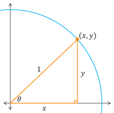
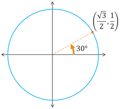
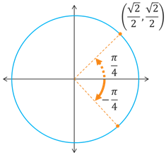
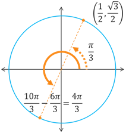

The Unit Circle
Trigonometric Functions
Trigonometric Functions
We now want to combine what we just learned about using the unit circle to compute the values of \(\sin(\theta)\) and \(\cos(\theta)\) with the fundamental identities to compute the values of the other trigonometric functions. To do this, let's first revisit the illustration of a right triangle inside the unit circle. We saw earlier that we were able to define \(\sin(\theta)\) and \(\cos(\theta)\) in terms of the \(y\) and \(x\) coordinates, respectively. We can do the same thing with the other trig functions.
For a terminal point \((x,y)\) located on the unit circle that corresponds to an acute central angle \(\theta\), we have the following.
Note that while sine and cosine are defined for every possible angle or terminal number, \(\tan(\theta)\) and \(\sec(\theta)\) will be undefined where \(x=0\) while \(\cot(\theta)\) and \(\csc(\theta)\) will be undefined where \(y=0\).
Here is a general process that we can follow to compute the value of any of the trigonometric functions at any of the "nice" angles or values. More specifically, to compute the trig values for angles related to \(\theta\) = 0°, 30°, 45°, 60°, and 90°, or to \(t = 0\), \(\frac{\pi}{6}\), \(\frac{\pi}{4}\), \(\frac{\pi}{3}\), and \(\frac{\pi}{2}\)).
This may sound like a lot, but don't let it intimidate you. You will get the hang of it. Let's work through some examples.
Example: Compute the exact values for (a) \(\csc(30^{\circ})\), (b) \(\sec\left(-\frac{\pi}{4}\right)\), and (c) \(\cot\left(\frac{10\pi}{3}\right)\).
a) Compute the exact value of \(\csc(30^{\circ})\).
A 30° angle is already an acute angle in the 1st quadrant, and its corresponding terminal point is \(\left(\frac{\sqrt{3}}{2}, \frac{1}{2}\right)\).
Next, we want to use a reciprocal identity to rewrite \(\csc(\theta)\) in terms of \(\sin(\theta)\). More specifically, we have \(\csc(\theta) = \frac{1}{\sin(\theta)}\). Since \(\sin(\theta)\) is the \(y\)-coordinate, we have \(\sin(30^{\circ}) = \frac{1}{2}\). Lastly, we know \(\sin(\theta) > 0\) in the 1st quadrant. So let's put this all together.
\[\begin{align*} \csc(30^{\circ}) &= \frac{1}{\sin(30^{\circ})} \\ &= \frac{1}{\frac{1}{2}} \\ &= 1 \cdot \frac{2}{1} \\ &= 2 \end{align*}\]So, we get \(\csc(30^{\circ}) = 2\).
b) Compute the exact value of \(\sec\left(-\frac{\pi}{4}\right)\).
A angle of \(-\frac{\pi}{4}\) is a clockwise rotation into the 4th quadrant. It has a \(\frac{\pi}{4}\) reference angle with corresponding terminal point \(\left(\frac{\sqrt{2}}{2}, \frac{\sqrt{2}}{2}\right)\).
Since \(\sec(\theta)\) is the reciprocal of \(\cos(\theta)\), we can use the reciprocal identity \(\sec(\theta) = \frac{1}{\cos(\theta)}\) and the even-odd identity \(\cos(-\theta) = \cos(\theta)\). Since \(\cos(\theta)\) is the \(x\)-coordinate, we have \(\cos\left(\frac{\pi}{4}\right) = \frac{\sqrt{2}}{2}\). We also know that \(\cos(\theta) > 0\) in the 4th quadrant.
\[\begin{align*} \sec\left(-\frac{\pi}{4}\right) &= \frac{1}{\cos\left(-\frac{\pi}{4}\right)} \\ &= \frac{1}{\cos\left(\frac{\pi}{4}\right)} \\ &= \frac{1}{\frac{\sqrt{2}}{2}} \\ &= 1 \cdot \frac{2}{\sqrt{2}} \\ &= \frac{2}{\sqrt{2}} \left(\frac{\sqrt{2}}{\sqrt{2}}\right) \\ &= \frac{2\sqrt{2}}{2} \\ &= \sqrt{2} \end{align*}\]So, we get \(\sec\left(-\frac{\pi}{4}\right) = \sqrt{2}\).
c) Compute the exact value of \(\cot\left(\frac{10\pi}{3}\right)\).
A full revolution is \(\frac{6\pi}{3}\) because \(\frac{6\pi}{3} = 2\pi\). This means that \(\frac{10\pi}{3}\) is coterminal to \(\frac{4\pi}{3}\), which is located in the 3rd quadrant. It has a reference angle of \(\frac{\pi}{3}\) which has a terminal point of \(\left(\frac{1}{2}, \frac{\sqrt{3}}{2}\right)\).
We can use the reciprocal identity \(\cot(\theta) = \frac{\cos(\theta)}{\sin(\theta)}\) to rewrite \(\cot(\theta)\) in terms of \(\cos(\theta)\) and \(\sin(\theta)\). We will need to use both the \(x\) and \(y\) coordinates of the terminal point since we are using both \(\cos(\theta)\) and \(\sin(\theta)\). We also know that \(\cot(\theta) > 0\) in the 3rd quadrant even though both \(\cos(\theta)\) and \(\sin(\theta)\) are negative.
\[\begin{align*} \cot\left(\frac{10\pi}{3}\right) &= \frac{\cos\left(\frac{10\pi}{3}\right)}{\sin\left(\frac{10\pi}{3}\right)} \\ &= \frac{-\cos\left(\frac{\pi}{3}\right)}{-\sin\left(\frac{\pi}{3}\right)} \\ &= \frac{-\frac{1}{2}}{-\frac{\sqrt{3}}{2}} \\ &= -\frac{1}{\cancel{2}} \cdot -\frac{\cancel{2}}{\sqrt{3}} \\ &= \frac{1}{\sqrt{3}} \end{align*}\]So, we get \(\cot\left(\frac{10\pi}{3}\right) = \frac{1}{\sqrt{3}}\).
Self-Check #3: What is the exact value of \(\sec\left(\frac{7\pi}{2}\right)\)? (Select the most appropriate response.)
(Answer: D) -- The angle \(\frac{7\pi}{2}\) is coterminal to \(\frac{3\pi}{2}\), which is a quadrantal angle on the -\(y\) axis. The terminal point on the -\(y\) axis is \((0,-1)\). The reciprocal of \(\sec(\theta)\) is \(\cos(\theta)\), which means \(\sec(\theta) = \frac{1}{\cos(\theta)}\). Also, \(\cos(\theta)\) means we want the \(x\)-coordinate. So, we get \(\sec\left(\frac{7\pi}{2}\right) = \sec\left(\frac{3\pi}{2}\right) = \frac{1}{\cos\left(\frac{3\pi}{2}\right)} = \frac{1}{0}\), which is undefined.
Self-Check #4: What is the exact value of \(\cot\left(-\frac{5\pi}{3}\right)\)?(Select the most appropriate response.)
(Answer: C) -- Since \(\cot(\theta)\) and \(\tan(\theta)\) are reciprocals, they will follow the same even-odd identity and they will have the same quadrant signs. This tells us two things. First, we get that \(\cot\left(-\frac{5\pi}{3}\right) = -\cot\left(\frac{5\pi}{3}\right)\). Second, because the angle \(\frac{5\pi}{3}\) is located in the 4th quadrant and has a reference angle of \(\frac{\pi}{3}\), we know that \(\cot(\theta)\) in the 4th quadrant will be negative (this makes a double negative). So far, we have \(\cot\left(-\frac{5\pi}{3}\right) = -\cot\left(\frac{5\pi}{3}\right) = -\left(-\cot\left(\frac{\pi}{3}\right)\right) = \cot\left(\frac{\pi}{3}\right)\). This should make sense because \(\frac{5\pi}{3}\) and \(\frac{\pi}{3}\) are actually coterminal, and thus they correspond to the same terminal point \(\left(\frac{1}{2}, \frac{\sqrt{3}}{2}\right)\). To finish this, we need to use a reciprocal identity to rewrite \(\cot(\theta)\) in terms of \(\sin(\theta)\) and \(\cos(\theta)\), evaluate \(\sin(\theta)\) and \(\cos(\theta)\) at \(\frac{\pi}{3}\), and then simplify. Doing so results in \(\cot\left(-\frac{5\pi}{3}\right) = \cot\left(\frac{\pi}{3}\right) = \frac{\cos\left(\frac{\pi}{3}\right)}{\sin\left(\frac{\pi}{3}\right)} = \frac{\frac{1}{2}}{\frac{\sqrt{3}}{2}} = \frac{1}{2} \cdot \frac{2}{\sqrt{3}} = \frac{1}{\sqrt{3}}\).
©2024 M4thG33x (new window) Some Rights Reserved.